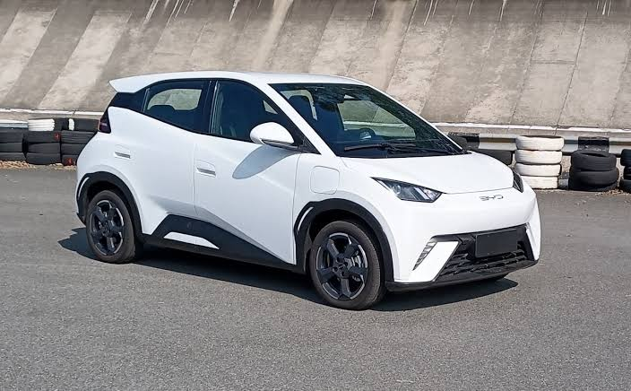
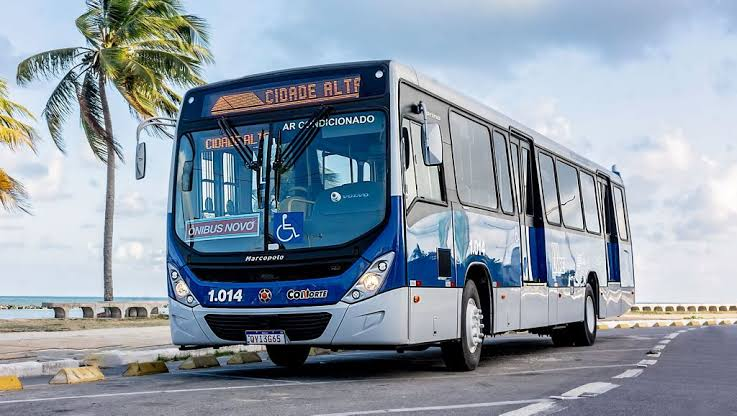

Os carros de passeio são os veículos mais poluentes, respondendo por 45% das emissões de CO2.
ESG-Transportes Sustentáveis
SIGA ABAIXOO OBJETIVO DA SUSTENTABILIADE ESG
O objetivo da sustentabilidade e ESG é promover práticas empresariais que sejam responsáveis e sustentáveis a longo prazo...
MAIS INFORMAÇÕESConscientização dos malefícios dos meios de trasportes atuais
E importante saber dos malefícios que estes meios de transporte podem causar em nosso mundo...
MAIS INFORMAÇÕESPraticas importantes para um trasporte sustentável
Práticas para reduzir os danos de um trasporte não sustentável
Ampliação da rede estrutural de trasporte coletivo.
Nas regiões metropolitanas e nos centros urbanos de grande e médio porte, os investimentos públicos devem priorizar a ampliação da rede estrutural de transporte coletivo
MAIS INFORMAÇÕESInfraestrutura para mais ciclovias.
Incentivar a utilização de modos não-motorizados, através da expansão da malha cicloviária e das áreas destinadas prioritariamente a ciclistas
MAIS INFORMAÇÕESPromover a utilização de veículos de baixo impacto poluidor
priorizar a ampliação da rede estrutural, utilizando a infraestrutura e a tecnologia de menor impacto ambiental.
MAIS INFORMAÇÕESMeios de transportes sustentáveis
Formas para sua locomoção sustentáveis
Bicicleta
Metrô
Carros
Transporte Publico
Economia e mercado
Sendo o objetivo os transportes sustentáveis, e de uma facilidade ter em mente os benefícios ambientais e de qual meio de transportes causa menos danos. Por tanto, discutiremos como podemos ter resultados positivos para o lado financeiro, de forma que beneficie os comércios.
DEMANDA DE MERCADO
A uma crescente demanda por meios de mais transportes sustentáveis por conta da preocupação ao meio ambiente e ao nosso mundo em si. Isso pode trazer muitas oportunidades para empresas que tem o ramo de transportes que são sustentáveis disponibilizando carros elétricos, transporte púbicos mais capazes e mais eficientes (ônibus), outros meios de transportes.
CUSTOS A VIABILIDADE ECONOMICA
Por sua vez, sabendo que inicialmente os investimentos em transportes sustentáveis seja caro, eles têm uma expectativa de prosperar e beneficiar a longo prazo, por conta das economias de escala que são muito importantes, reduções de custos operacionais (como a manutenção dos veículos e combustíveis) e com uma capacidade de ter muitos ganhos de reputação para a empresa.